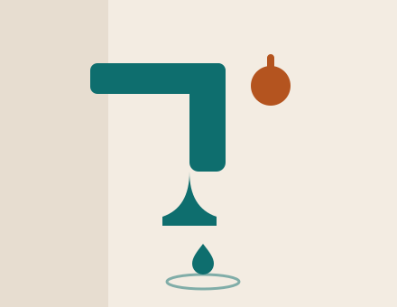

Reparación de canilla goteante
- Revisión de llave, válvula y flexible.
- Repuesto de calidad según el diagnóstico.
- Trabajo desde el frente, sin picar pared.
- Prueba de cierre y sellado antes de terminar.
Una canilla que gotea no se arregla sola
Reparamos canillas en Capital Federal, con diagnóstico claro, repuesto adecuado y sin romper el revestimiento.

Revisamos el origen del goteo y resolvemos la pieza que realmente falla. Así evitás pagar de más y volvés a usar la canilla con tranquilidad.
Escribinos tu nombre, barrio y qué observás en la canilla.
Coordinamos el horario y revisamos la causa sin adivinar.
Cambiamos lo necesario y verificamos con vos que no vuelva a gotear.
Decinos tu barrio y confirmamos disponibilidad para coordinar el paso dentro de nuestro horario.
“La arreglaron en un rato y dejó de tirar agua. Me explicaron todo antes de empezar.”
Federico M. · Almagro“Pensé que había que romper la pared y no fue así. Cambiaron la válvula y listo.”
Paula V. · Núñez“Buen trato y puntuales. La canilla quedó como nueva.”
Tomás L. · Parque PatriciosUna canilla que gotea puede tirar decenas de litros por día. La arreglamos y frenás el desperdicio.
Casi siempre sí: trabajamos desde el frente, sin romper ni picar.
Depende del diagnóstico; cambiamos solo la pieza que falla cuando es posible.
Coordinamos el paso el mismo día dentro del horario de 9 a 18 hs en CABA.
Si vuelve a gotear por la misma causa, volvemos a revisarla sin costo del primer paso.
Este servicio está enfocado en canillas goteantes; te orientamos por WhatsApp para otros casos.
Completá el formulario y se abre tu chat de WhatsApp con el mensaje listo.